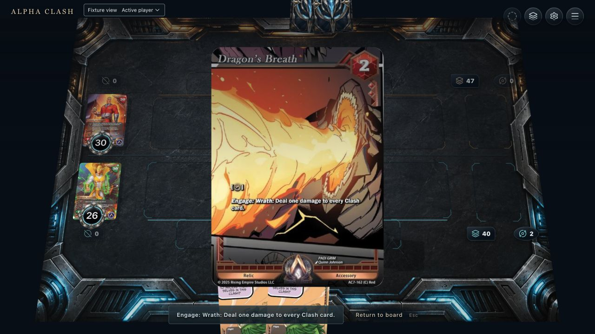
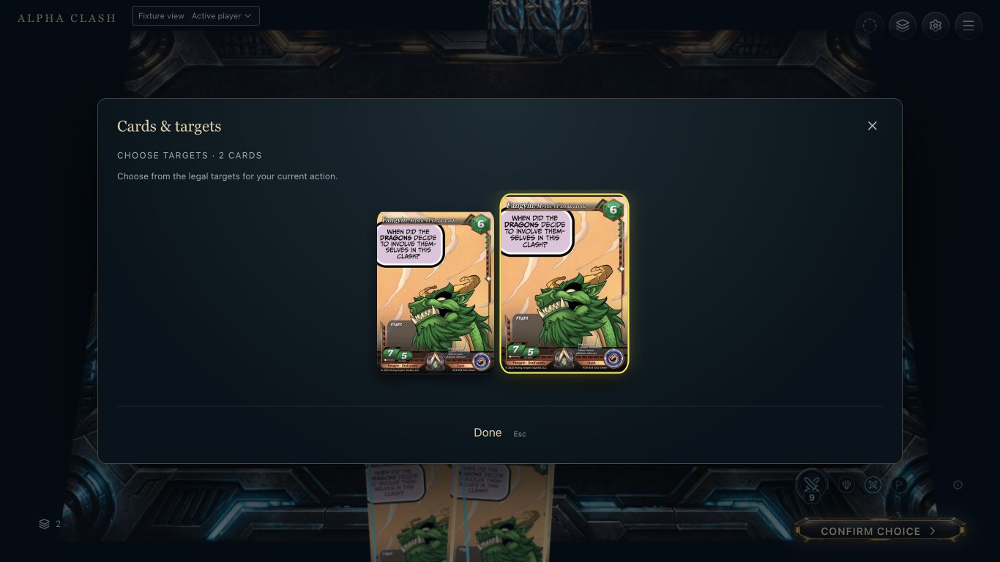
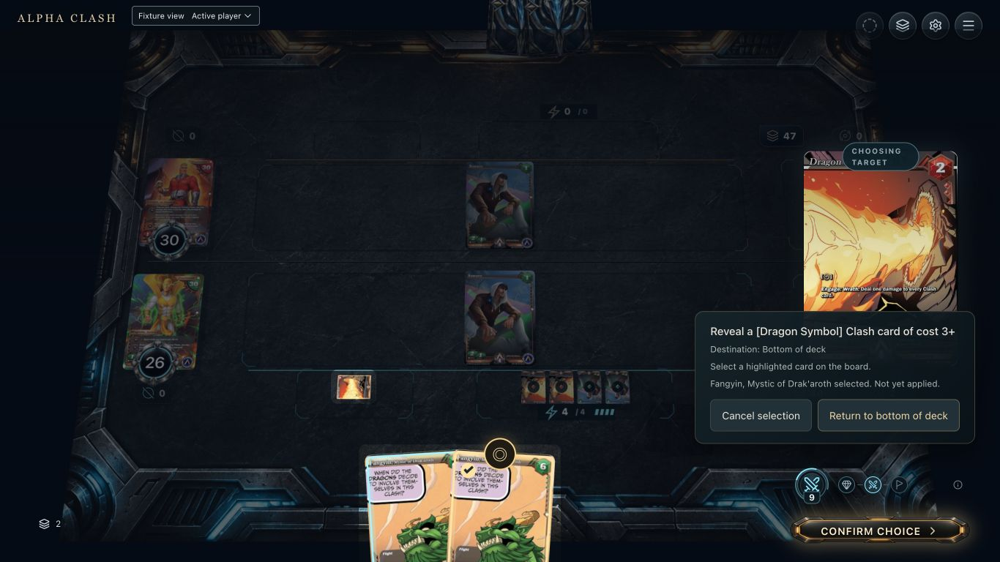
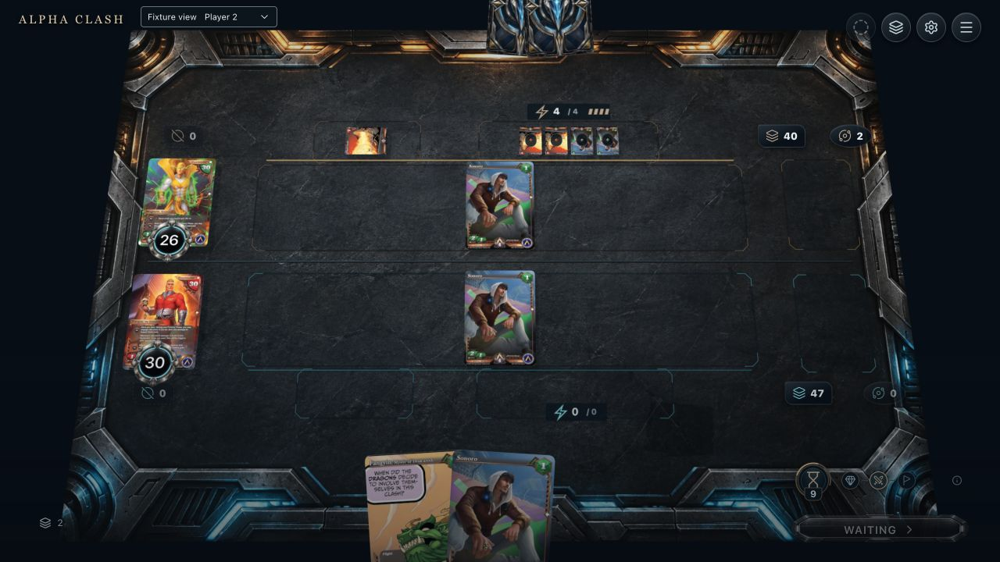
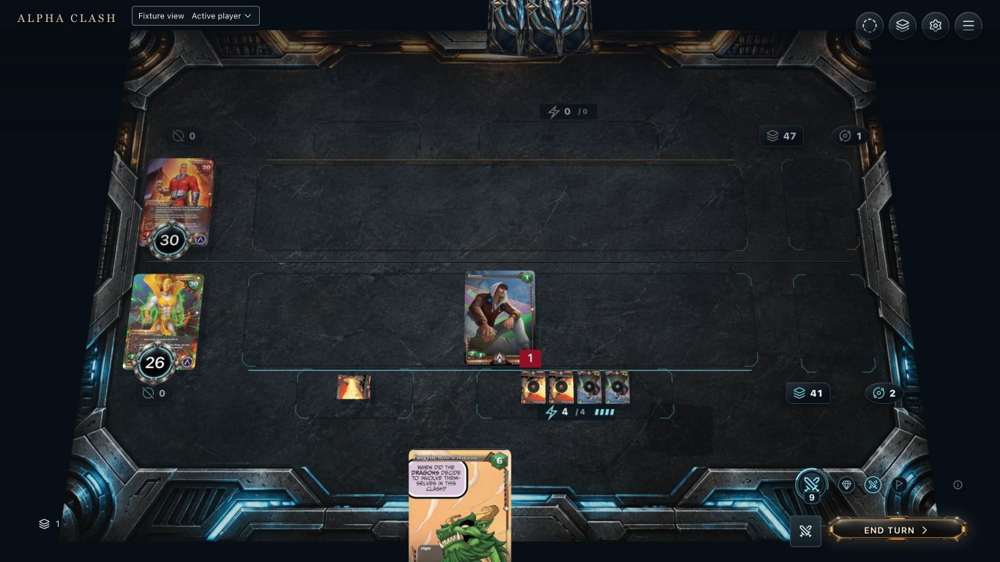
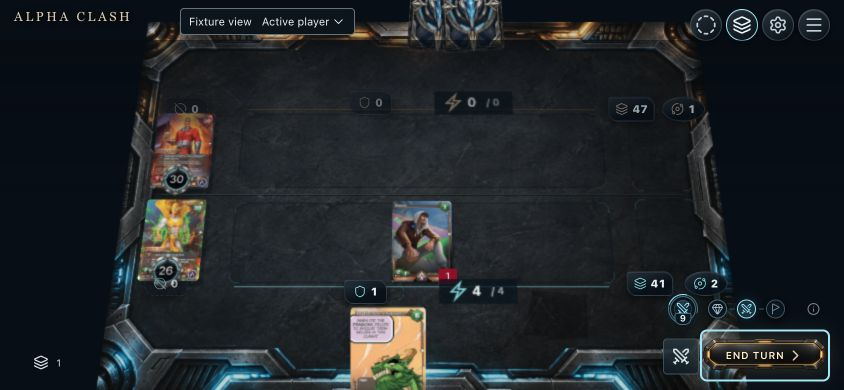

11. Available
Captured source inspection before native activation. Proposed: use the ready/Engage shape beside the action; activation pays Engage before the optional decision.

22. Hover / focus
Captured picker focus on the second legal Fangyin copy. Proposed: a local copy-position label and board link identify the exact physical copy. This baseline capture precedes the picker-close repair.

33. Selected
Captured after repaired Done: native deck 40 and hand two, selected card not yet applied. Confirm is a separate action. Proposed: source-to-card-to-deck-bottom relation and paid-cost context.

44. Pending
Captured non-owner Waiting during the private target choice, before owner submission. No private Dragon candidates. Proposed: accepted-submission acknowledgement must remain visible without exposing the rest of the hand.

55. Resolving
Captured accepted baseline result, not an intermediate reveal frame. Proposed: native-authorized public reveal, bottom-deck transfer, grouped damage, anchored defeat movement. Public reveal event data and a legible reveal/return flight remain missing; normal and muted/reduced baseline recordings are below.

66. Completed
Captured keyboard Confirm result: deck 41, hand one, opposing Clash zero/Oblivion one, health unchanged. Proposed: readable phase-damage badge and engaged source; compact accessory inspection uses its pile.